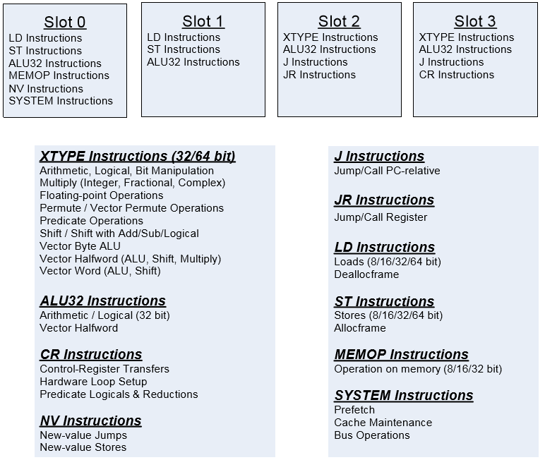
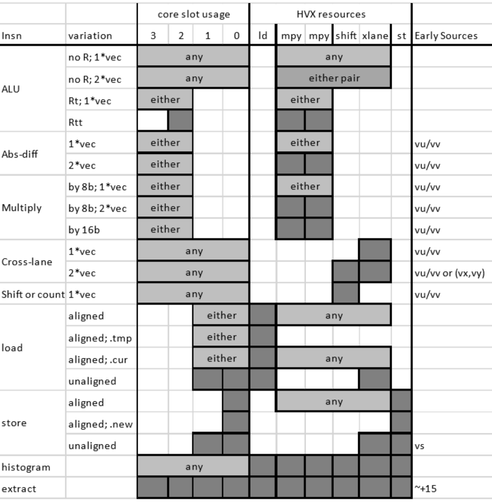
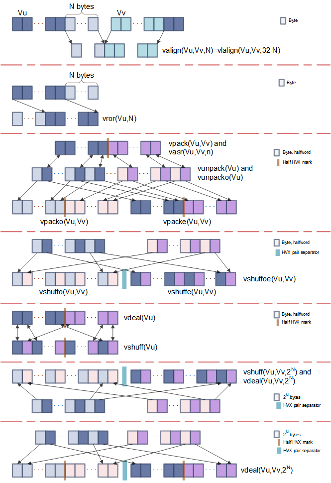

DSP optimizations
There are some basic concepts to keep in mind when writing efficient assembly code. These concepts are also relevant when writing with intrinsics because you should know approximately how the compiler is able to group and schedule intrinsics in order to achieve maximum performance.
This page briefly describes some of these fundamental concepts.
TIP: When writing code with intrinsics or assembly instructions, it is best to start by writing functional code using the right instructions, and then only optimizing code further by following the optimization guidelines below. Attempting to do too much at once becomes more time consuming because low-level optimizations typically obscure the clarity of the code.
Packing instructions
Each hardware thread is capable of executing a packet of up to four instructions in a given thread cycle. Instructions occurring in a packet execute in parallel, making it possible within one packet to consume a register and update its content at the same time. For example, the following packet consumes the contents of R0 that were produced in the packets that preceded it and then updates its content with R4.
{
R2 = vaddh(R0,R1)
R0 = R4
}
The exception to this rule is when the .new specifier is used within an instruction. For example, the following packet first computes R2 and then store its content to memory.
{
R2 = memh(R4+#8)
memw(R5) = R2.new
}
To maximize the number of instructions per packet, it is important to understand how instructions can or cannot be combined in each packet. The restrictions are different for scalar and HVX instructions.
Scalar packing rules
Rules on how to form packets are explained in the Instruction packets section of the Hexagon V66 Programmer's Reference Manual (80-N2040-42).
Let's focus on mastering the most important restriction to packing instructions together: resource constraints.
The simplest way to understand the impact of resource constraints on grouping with V66 is to think simply in terms of slots. Because of the resources they use, each type of instruction can only execute on one specific slot, out of four available slots. For example, logical and multiply operations consume either slot 2 or 3, whereas a load instruction consumes either slot 0 or 1. This means that at most two logical operations, or one logical and one multiply operation, or two multiply operations, can execute in a single packet.
The description of which type of instruction is acceptable for each slot is provided in Figure 3-1 of the Hexagon V66 Programmer's Reference Manual (80-N2040-42) as well as in the detailed description of each instruction. For convenience, this figure is reproduced below.

Instruction slots
Other restrictions outlined in the Instruction packets section of the same manual occasionally cause a packet that follows the resource constraints to still generate an error message at compile time. However, these other rules come into play much less frequently, and you can learn about them over time.
HVX packing rules
Rules on how to form packets in HVX are explained in the VLIW packing rules section of the Hexagon V66 HVX Programmer's Reference Manual (80-N2040-44).
HVX instructions share the same slots as V6x, and there are restrictions on which slot each HVX instruction uses. However, unlike with V6x, resources and slots are not correlated one-to-one. When grouping HVX instructions, it is best to focus on understanding which resources each HVX instruction share, and understanding how this impacts the ability to group instructions in a packet; slot restrictions rarely come into consideration when writing HVX code.
Resource restrictions are summarized in the Hexagon V66 HVX Programmer's Reference Manual (80-N2040-44) and reproduced in the table below for convenience. The detailed description of each HVX instruction also indicates which HVX resources it consumes.

HVX slot/resource/latency summary
Be aware that some instructions, such as vrmpy, come in different flavors: some that consume two HVX resources, and some that consume only one resource.
For example, halfword multiplies use both multiply resources, which means that no other HVX multiply instruction is present in the same packet. When trying to optimize the inner loop of a function multiply-bound, plan early on how to maximize multiply resource utilization in as many packets as possible.
NOTE: Unlike scalar stores, you cannot group two HVX stores in a single packet.
Reduce stalls
In addition to executing as many instructions as possible in any given packet to maximize parallelization, it is important to be aware of latencies that might cause the processor to stall. This section discusses the most common causes of stalls that deteriorate performance.
Instruction latencies
Thread vs. processor cycles
Hexagon cores dynamically schedule packets from threads into the core pipeline. The number of cycles to execute a packet varies depending on the behavior of other threads. The optimal schedule for a single thread running in isolation can be different than the optimal schedule for a thread running with other threads.
For example, when multiple threads execute in parallel, one thread executes every other processor cycle. This means that if the processor is clocked at 800 MHz and four threads execute in parallel, each thread runs effectively at 400 MHz.
However, when a thread is idle, another thread might be able to steal some of its cycles, allowing it to run faster than it runs if all hardware threads were busy. In practice, on Hexagon versions up through the SM8250 device, a single-threaded workload might run up to 20% to 30% faster if it is the only running thread, compared to when it is concurrent with other running software threads that are consuming all the hardware threads.
The following sections provide general rules on latency scheduling assuming at least two threads are running. These rules provide a simplified programming model that is reasonable to use when writing optimized code.
Using this model, we introduce the concept of a packet delay. This delay is the number of packets that are to be scheduled between two dependent packets to prevent the thread from stalling.
Scalar latencies
Instructions have no packet delays, with the following exceptions:
-
Instructions that are paired with the
.newpredicate, which allows two sequential instructions to execute within the same packet. -
Mispredicted jumps, which typically incur around five packet stalls. For more information on speculative branches, see the Compare jumps section in the Hexagon V66 Programmer's Reference Manual (80-N2040-42).
NOTE: When possible, try using hardware loops; they do not generate stalls, even when exiting the loop.
-
Long-latency instructions that consume the result of another long-latency instruction. These instructions experience a one-packet delay with the exception of back-to-back multiplies that share the same accumulator and thus do not experience any delay.
Long latency instructions are all the load, multiply, and float instructions.
For example, the following instruction sequences stall:
{ R2=mpy(R0.L,R0.L) } // one-cycle stall { R3=mpy(R2.L,R2.L) } ... { R2 = memw(R1) } // one-cycle stall { R3=mpy(R2.L,R2.L) }But this instruction sequence does not stall:
{ R2=mpy(R0.L,R0.L) } { R2+=mpy(R1.L,R1.L) } // no stall
HVX latencies
The Instruction latency section of the Hexagon V66 HVX Programmer's Reference Manual (80-N2040-44) discusses latencies. This section discusses the most common HVX arithmetic instruction sequences responsible for stalls.
The most common causes of stalls are one-packet delays present when the following instructions consume a result that was produced in the previous packet:
-
Multiplies
NOTE: Back-to-back multiplies that only share the same accumulator do not stall.
-
Shift and permute operations
The Instruction latency section provides some examples of these rules:
{ V8 = VADD(V0,V0) }
{ V0 = VADD(V8,V9) } // NO STALL
{ V1 = VMPY(V0,R0) } // STALL due to V0
{ V2 = VSUB(V2,V1) } // NO STALL on V1
{ V5:4 = VUNPACK(V2) } // STALL due to V2
{ V2 = VADD(V0,V4) } // NO STALL on V4
Memory latencies
Scalar data memory accesses go through a two-level cache hierarchy, while HVX memory accesses only transit through the L2 memory.
Cache sizes vary depending on the exact chip variant:
- L1 cache sizes are 16 to 32 KB
- L2 cache sizes are 128 to 1024 KB on aDSP variants, and 512 to 2048 KB on cDSP variants
To avoid cache misses when writing optimized applications, it is critical to reduce the data memory throughput and maximize data locality. Common data optimization techniques exploiting data locality include the following techniques:
-
Register data reuse
The application stores values into registers for later use. For example, applying a filter on multiple lines at the same time allows holding of coefficients in registers, thus reducing the overall data bandwidth.
-
Tiling
A tile defines a small region of an image. The application processes an image one tile at a time or a few tiles at a time. This approach might be appropriate when using scalar instructions rather than HVX instructions because it allows preservation of data within L1 and thus maximizes scalar processing throughput. Larger buffers, such as groups of image lines, are typically too large for L1. Using a tiling approach typically comes at the cost of greater programming complexity and more non-linear data addressing.
-
Line processing
The application processes an image a few lines at a time. This is the most common approach for HVX implementations as it allows to load entire HVX vectors and leverage the large L2 memory cache size.
Another type of cache optimization consists of explicitly managing cache contents by way of prefetching data into cache and, more rarely, invalidating cache line contents. Leave this optimization for the end after you have already ensured a maximum of data locality in your code.
The Hexagon V66 Programmer's Reference Manual (80-N2040-42) details the L2 cache prefetching mechanism. For an example that shows how to perform L2 prefetching, see the multithreading project example.
NOTE: It is common to optimize an application on a single-thread first and then multi-thread the code later. When using that approach, extrapolating multi-threaded performance from single-thread performance can occasionally be misleading: memory bandwidth might not be a bottleneck when only one thread is running, but it become one of the limiting resources when more threads run in parallel. As a result, it is a good practice to write applications as conservatively as possible with respect to memory bandwidth usage, regardless of the performance of the single-threaded code.
Although data memory latencies depend on many parameters and architecture variants, it is useful to know to a first order the cost of memory accesses when planning the optimization of an application. The following numbers are rough estimates on what to expect in making memory accesses:
-
DDR memory access: ~250 ns
-
L2 read latency: 6 thread cycles
HVX has a mechanism for pushing HVX instructions into a queue called VFIFO. As long as no mispredicted branches occur, this queue remains full. The L2 reads triggered by VMEM instructions occur enough in advance that the result from a VMEM load is available in the next cycle without stalling. In other words, for HVX, L2 reads have a one-cycle latency, and the following instruction sequence does not stall as long as no mispredicted branch has occurred recently:
{ V0 = VMEM(R0++) } { V1 = VADD(V0,V1) } // No stall if no recent mispredicted branchNote: The L2 VMEM read latency is higher--around 15 thread cycles--when following an L2 VMEM store to the same location. The reason for this delay is that the store must fully reach L2 before the load starts. For active data that do not fit in the vector register file, consider using VTCM instead of L2 to reduce the store-to-load penalty.
-
Maximum sustainable read-write L2 bandwidth with no bank conflicts: 128 bytes per processor cycle
Also, the HVX engine is directly connected to L2 cache, bypassing L1. HVX instructions are pipelined deeply enough to avoid any observed latencies for L2 loads or stores (when the pipeline is full and L2 traffic is not very congested). However, due to the depth of the HVX pipeline, it is expensive to do a transfer from an HVX register to a scalar register, or to perform a scalar memory load from an address following an HVX store to the same cache line. When using HVX in performance-sensitive code, do all loads, stores, and arithmetic via HVX instructions, and use scalar instructions and registers only for addressing, controlling, or processing on a different data set than that being done in HVX.
Software pipelining
The Hexagon instruction set allows multiple unrelated instructions within one packet. This flexibility provides great opportunities for parallelizing the code, which are best exploited by doing software pipelining. Software pipelining consists of processing a few consecutive instances of a loop in parallel in order to reduce data dependencies and provide more opportunities for operations to be executed in parallel.
This approach comes at the expense of having separate code for prologue and epilogue code. For example, a loop does the following:
- Processes data loads for iteration
n+2 - Performs some computations for iterations
nandn+1 - Stores the results of iteration
n
In this case, the prologue and epilogue code must handle the first and last two- or three-loop iterations separately, and it handles cases where the number of loop iterations is small.
The Hexagon instruction set allows for a decrease in the complexity of the prologue and epilogue code by supporting pipelined hardware loops. Pipelined hardware loops set predicate registers after a loop has been iterated a specific number of times, thus allowing some operations (typically stores) to execute only after a few loop iterations. For more information on this approach, see the Pipelined hardware loops section in the Hexagon V66 Programmer's Reference Manual (80-N2040-42).
NOTE: The Hexagon compiler automatically conducts software pipelining of appropriate loops.
HVX optimizations
HVX adds a powerful set of instructions that allow processing of large vectors very efficiently.
The Hexagon V66 HVX Programmer's Reference Manual (80-N2040-44) is the authoritative source for HVX instruction syntax and behavior for any given revision. The following sections highlight some these instructions.
When to use HVX
HVX vectors are 128-byte wide. As a result, HVX lends itself well to sequences of identical operations on contiguous 32-bit, 16-bit, or 8-bit elements.
Thus, HVX is ideally suited for some application spaces such as image processing where many operations are to be applied independently to continuous pixels. However, it does not mean that HVX is restricted to only perform operations on contiguous elements in memory, as explained below.
Although HVX memory loads and memory stores access contiguous elements in memory, HVX provides several powerful instructions for shuffling and interleaving elements between and within HVX vectors. These instructions allow HVX to efficiently process non-continuous elements that follow some predictable patterns, such as odd and even elements or vertical lines. The next section discusses these instructions in more detail.
For portions of code that only operate sequentially, one element at a time, and where no parallelism opportunity is found, using V6x instructions and letting other threads use the HVX resources is often the best approach.
HVX byte manipulations
Depending on the nature of the algorithm being ported on HVX, it might be necessary to rearrange elements from an HVX vector or pair of HVX vectors in various ways. Several HVX instructions allow you to address this challenge. The following figure describes these instructions and provides a visual summary of the instructions.

Summary of the most common HVX element manipulations
-
valign, vlalign, vrorThese three instructions are straightforward:
valignandvlaligncreate an HVX vector made out of the lowest bytes of one vector and the upper bytes of another vector.vrorperforms a circular rotation of an HVX vector by an arbitrary number of bytes.
-
vpacke, vpacko, vpack, vunpack, vunpacko, vdealvpackeandvpackopack the even or odd 32-bit or 16-bit elements of two HVX vectors into one vector.vpackperforms an element size reduction, shrinking the contents of two HVX vectors into one vector after saturation.vunpackandvunpackoare the opposite forms ofvpack, respectively unpacking the even and odd 8-bit or 16-bit elements into elements twice as large.vdeal(the flavor that consumes one input register) operates in the same way asvpackeandvpackocombined, but it operates on half the number of elements: it packs the even elements from the input register into the lower half of the output register, and packs the odd elements into the upper half of the register.
-
vshuffe, vshuffo, vshuffoe, vshuffvshuffeandvshuffoare similar to their counterparts,vpackeandvpacko, in that they move the even or odd elements of two HVX into one HVX vector. The difference with their vpack counterparts is that elements from both input HVX vectors are interleaved (the contents of both input register is being shuffled into one register).vshuffoeexecutes bothvshuffeandvshuffoat the same time and generates a register pair where the two registers in the pair are the output from thevshuffoandvshuffeinstructions.vshuff(the flavor that consumes one input register) interleaves the elements from the upper and lower parts of a register into another register.
The
vshuffandvpackvariants are helpful in different use cases. For example, if an HVX register contains pairs of (x,y) coordinates, usevpackeandvpackoto separate the x and y elements into different vectors. On the other hand,vshuffoorvshuffecan follow HVX instructions that produce HVX vectors with double precision, and store the results of consecutive operations in the upper and lower registers of a pair. -
vasrA narrowing shift: it takes two input HVX vectors and returns one output HVX vector. The narrowing shift is applied on each element of the two input HVX registers, and thus it produces output with the same order as a
vshuffeorvshuffoinstruction. -
Cross-lane
vshuff, vdealThese instructions are very powerful but not trivial to understand. They perform a multi-level transpose operation between groups of registers. The most common configurations used with
vshuffandvdealare for positive and negative powers of 2.-
vshuffwith an element size ofRt= 2N places the 2N-byte even elements from both input vectors into the low register of the output pair, and the 2N-byte odd elements into the high register. This operation is a generalization ofvshuffoeto larger element sizes. -
vshuffwith an element size ofRt= -2N interleaves the 2N-byte elements from both input vectors into the output register. This operation is a generalization of the non-Cross-lane variant ofvshuffto larger element sizes. -
vdealwith an element size ofRt= 2N is identical tovshuff. -
vdealwith an element size ofRt= -2N packs the 2N-byte even elements from both input vectors into the low output register pair, and the odd elements into the high pair. ForN=0, this instruction is the same as executingpackoandpackeat the same time.
-
-
vdelta, vrdelta-
vdeltaandvrdeltause a network of switchboxes to permute or copy bytes within an HVX vector. Consider using these instructions when you need transforms with some irregular patterns not covered in the operations listed above. -
vdeltaandvrdeltaare configured with an HVX vector. The simplest and safest way of determining the configuration values for this register is to use a configuration tool that is provided with the SDK tools under{HEXAGON_SDK_ROOT}/tools/HEXAGON_Tools/<version number>/Examples/libcore/Vdelta_Helper/General_permute_network.html.At the bottom of this html page, you can specify a pattern in which the bytes of the input vector should be reordered. For example, if bytes 1 and 5 are to be dropped from the input vector, specify in the
TPERM[N]control box a sequence of bytes that begins with0, 2, 3, 4, 6, ....Once the output pattern is fully specified, click Submit for Benes or Submit for Delta to retrieve the configuration, if one exists, and perform the pattern transformation using either a sequence of a
vrdeltaandvdeltainstructions (Benes approach) or onevrdeltainstruction.
-
Memory operations
Aligned and unaligned HVX memory operations may be performed in C without using intrinsics.
Aligned HVX loads and stores
Dereferencing an HVX pointer using the HVX_Vector type defined in $DEFAULT_HEXAGON_TOOLS_ROOT/Tools/target/hexagon/include/hexagon_types.h results in aligned HVX VMEM instructions for loads and stores that ignore the lowest bits of the pointer to always align the load or store to the HVX vector size:
HVX_Vector* hvx_ptr = (HVX_Vector*)ptr;
HVX_Vector hvx_value = *hvx_ptr;
Assuming hvx_value is mapped into V0 and ptr into R0, this code is compiled into the following instruction in assembly:
V0 = VMEM(R0) // (R0 & 127) bits are ignored
Similarly, storing to an HVX pointer results in ignoring the lowest bits to perform a VMEM store. The following code:
HVX_Vector* hvx_ptr = (HVX_Vector*)ptr;
*hvx_ptr = hvx_value;
is compiled into the following single instruction, assuming hvx_value is mapped into V0 and ptr into R0:
VMEM(R0) = V0 // (R0 & 127) bits are ignored
Unaligned HVX loads and stores
To perform unaligned loads and stores, you can define the following macro:
#define vmemu(A) *(( HVX_UVector*)(A))
NOTE: Using unaligned HVX load/store operations is inherently less efficient than using aligned load/store operations combined with explicit HVX alignment instructions VALIGN and VLALIGN.
With these, you can perform unaligned loads and stores in C the same way that you would in assembly:
HVX_Vector value = vmemu(ptr)
vmemu(ptr) = new_value
results in assembly in an unaligned VMEMU load and an unaligned VMEMU store operations.
V0 = VMEMU(R0) // All address bits from R0 are used when performing the unaligned load
VMEMU(R0) = V1 // All address bits from R0 are used when performing the unaligned store
Array stores of arbitrary sizes
Stores of arrays of arbitrary sizes may be accomplished with the following C helper function that leverages HVX bytewise-enabled stores. Note that this approach is only recommended for rare boundary cases, as its performance is significantly worse than regular aligned or unaligned stores.
#include "hexagon_types.h"
#define VLEN 128
// This stores the first n bytes from vector vin to address 'addr'.
// n must be in range 1..VLEN, addr may have any alignment.
// Implementation does one or two masked stores.
static inline void q6op_vstu_variable_ARV( void * addr, int n, HVX_Vector vin)
{
vin = Q6_V_vlalign_VVR( vin, vin, (size_t)addr); //rotate as needed.
unsigned left_off = (size_t)addr & (#VLEN-1);
unsigned right_off = left_off + n;
HVX_VectorPred qL_not = Q6_Q_vsetq_R( (size_t)addr );
HVX_VectorPred qR = Q6_Q_vsetq2_R( right_off );
if( right_off > 128 ){
Q6_vmaskedstoreq_QAV( qR, (HVX_Vector*)addr + 1, vin);
qR = Q6_Q_vcmp_eq_VbVb( vin,vin); // all 1's
}
qL_not = Q6_Q_or_QQn( qL_not, qR );
Q6_vmaskedstorenq_QAV( qL_not,(HVX_Vector*)addr, vin );
}
Accessing scalar contents from an HVX register
The recommended way to access an element from an HVX register is to go through memory instead of using vextract. This approach is best accomplished using a union. For example, the following code extracts the first 16-bit element of HVX register hvx_value into the 16-bit variable first_element:
union {int16_t array[ELEM_PER_VEC]; HVX_Vector vector; } HVX_and_array;
HVX_and_array.vector = hvx_value; // turns into an HVX store to memory
int16_t first_element = HVX_and_array.array[0]; // turns into a scalar read from memory
Expect a delay of tens of cycles between the HVX write to memory and the scalar read.
VTCM/lookup
V6x supports scatter/gather operations, allowing you to perform vectorized random-access memory lookups that are not limited to 256 entries as is the case with the vlut instruction.
For more details on this instruction, see the Hexagon V66 HVX Programmer's Reference Manual User Guide.
NOTE: The scatter/gather operations cause significant traffic in the VTCM subsytem, so they are prone to stalling when memory conflicts occur. For information on how to avoid scatter/gather stalls, see the Avoid scatter/gather stalls section of the Hexagon V66 HVX Programmer's Reference Manual User Guide.
Float support
Float to qfloat conversions
V68 supports HVX operations with float and qfloat data types. Conversion between these types is simply achieved using instructions that consume one type of data and produce another.
For example:
-
Conversion from an HVX vector made of IEEE 754 single float elements to an HVX vector made of qfloat elements:
HVX_Vector vqf32 = Q6_Vqf32_vadd_VsfVsf(vsf, Q6_V_vzero()) -
Conversion from an HVX vector made of qfloat elements to an HVX vector made of IEEE 754 single float elements:
HVX_Vector vsf = Q6_Vsf_equals_Vqf32(vqf32);
The QHL HVX APIs include a number of helper functions to perform conversions between IEEE and Qualcomm float numbers including those shown above.
qfloat precision
Unlike float operations, qfloat operations do not normalize their ouput vectors. As a result, sequences of qfloat multiplies may lose some accuracy compared to their float equivalent and forcing normalization prior to the multiplies may be needed to achieve greater accuracy. This is for example the case when using the Horner's method for polynomial approximations where a variable goes through a chain of multiplies.
The simplest way to normalize a number consists in adding zero to it. For example, 16-bit qfloat normalization is achieved as follows:
x = Q6_Vqf16_vadd_Vqf16Vhf(x, Q6_V_vzero());
As a general rule of thumb, for greater accuracy:
- inputs to qfloat
vmpyinstructions should be normalized - no normalization is needed for the inputs to a qfloat
vaddoperation